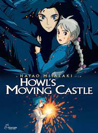

Spirited Away (2001)
Directed by Hayao Miyazaki, "Spirited Away" follows the story of a young girl named Chihiro who becomes trapped in a mysterious and magical world populated by spirits. To save her parents and find her way back home, Chihiro must navigate through a series of fantastical encounters and confrontations.
.jpg)
My Neighbor Totoro (1988)
Directed by Hayao Miyazaki, "My Neighbor Totoro" is a heartwarming tale of two young sisters, Satsuki and Mei, who move to the countryside and discover friendly forest spirits, including the iconic Totoro. The film beautifully captures the innocence of childhood and the wonder of nature.
.jpg)
Princess Mononoke (1997)
Directed by Hayao Miyazaki, "Princess Mononoke" tells the story of Ashitaka, a young prince who becomes embroiled in a conflict between industrial humans and the guardians of the forest, led by the fierce Princess Mononoke. The film explores themes of environmentalism, morality, and the consequences of human greed.

Howl's Moving Castle (2004)
Directed by Hayao Miyazaki, "Howl's Moving Castle" follows the adventures of Sophie, a young woman cursed to an elderly appearance, as she seeks refuge in the magical moving castle of the wizard Howl. As Sophie navigates her new life, she becomes entangled in Howl's struggles against dark forces and discovers the power of love and self-acceptance.
Grave of the Fireflies (1988)
Directed by Isao Takahata, "Grave of the Fireflies" is a poignant and heartbreaking tale set in Japan during World War II. The film follows two siblings, Seita and Setsuko, as they struggle to survive and find meaning amidst the devastation of war. It's a powerful portrayal of the human cost of conflict and the enduring bond between siblings.
.jpg)